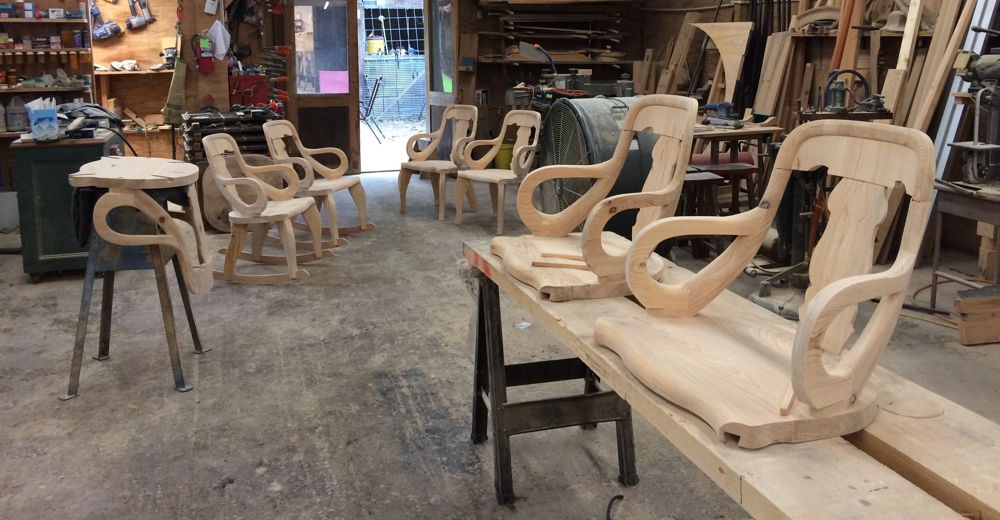
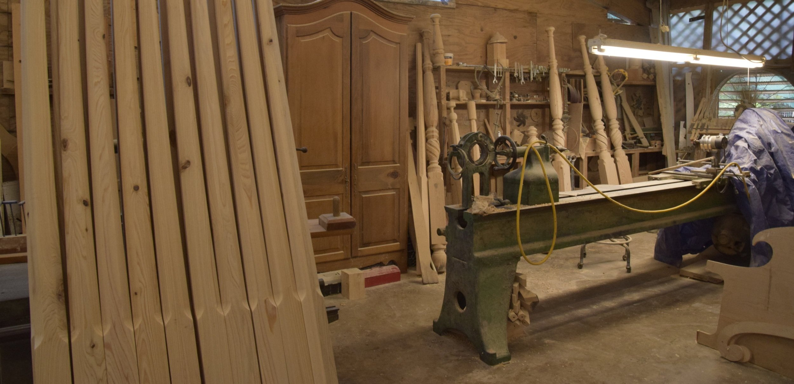
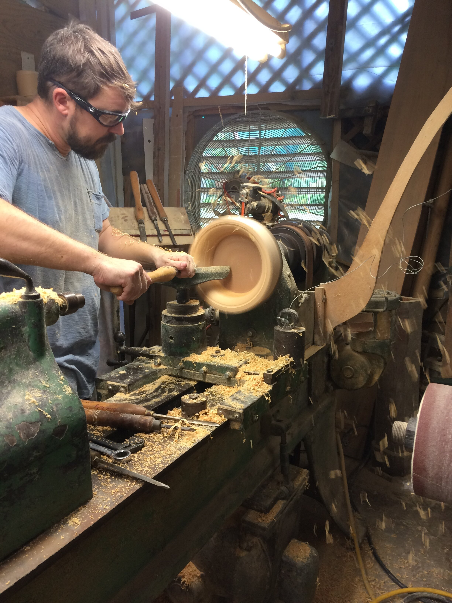
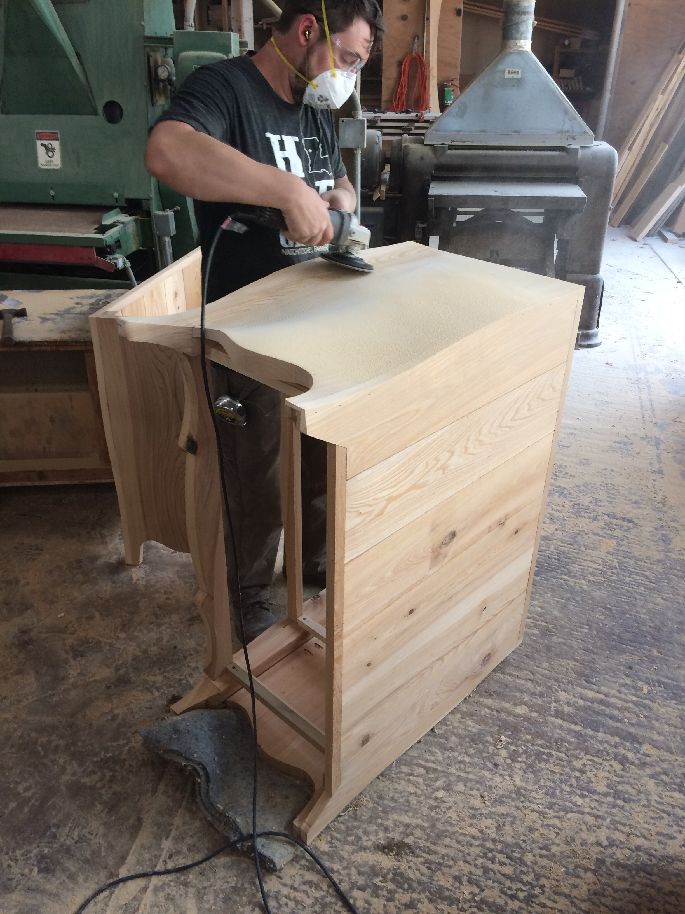
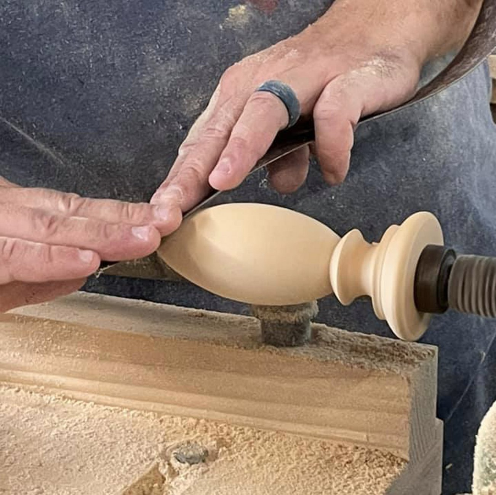

Fine cypress furniture · since 1965
Handcrafted heirlooms, made the Louisiana way.
Three generations of the Olivier family shaping cypress into beds, tables and furniture that will be passed down through families as treasured heirlooms — from our shop in the heart of Natchitoches.

From one craftsman's hands, a family's legacy.
Established in 1965 by George M. Olivier III, Olivier WoodWorks has transcended three generations. Today his daughter Chalon Ahbol and her son Alix preserve the legacy, crafting cypress furniture with the same designs, patterns and methods George used.
Featured pieces
A few of the pieces that spend time in our front showroom, waiting for the right home.
Craft, patience, character.
"Idleness occupies little time in the shop. When the hands aren't shaping wood, the mind is. Yet it's the finished pieces that do all the talking."

Match the grain
We match the wood grain and place knots strategically to bring out the character of each piece — arranging the surprises of cypress as an artist would place color in a painting.

Finished by hand
Oil-based stains and General Finish topcoats — New Orleans Patina, Provincial, and Special Walnut — give each piece a finish meant to be touched and lived with.

Built to pass down
Time-honored joinery, solid cypress, and a refusal to look at the clock. Our work is a pinnacle of artistry, craft and skill — furniture made to become treasured heirlooms.
Three signature finishes
Each piece is finished with oil-based stains and General Finish topcoats, chosen to bring out the quiet warmth of Louisiana cypress.

"My pieces are mighty comfortable to be with. They're not so fine that you think you're livin' in a museum. You can make something so fine you can't enjoy it."— George M. Olivier III, founder

Step into the shop.
As you stroll along Front Street in historic Natchitoches, you'll see handmade cypress furniture with a distinct Louisiana style. Just a few blocks away is where the magic happens — wood is sawed, lathes turn, sawdust flies.
The workshop
117 Second Street
Natchitoches, Louisiana 71457
Call or write
(318) 352-1427